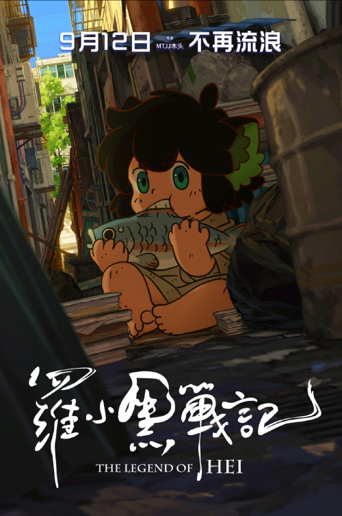

Huyền thoại La Tiểu Hắc – Thêm một “vị ngon” từ ngành công nghiệp hoạt hình Trung Quốc
Những năm gần đây, Trung Quốc trở thành một hiện tượng trong ngành sản xuất phim hoạt hình 2D toàn cầu. Với sự đầu tư mạnh về mặt tài chính, cũng như việc chăm chút rất nhiều về mặt nội dung, những bộ anime do Trung Quốc sản xuất đã dần được khán giả yêu thích và thừa nhận. Mặc dù Trung Quốc vẫn chưa thể vươn tầm đến được như Nhật Bản, nhưng nhứng sản phẩm gần đây mà họ đem lại sẽ giúp khán giả có những lựa chọn mới lạ và thú vị.

Huyền thoại La Tiểu Hắc (The Legend of Hei) là một bộ phim đáng được nhắc tới trong năm nay sau Ma Đạo Tổ Sư 2. Bộ phim được ra rạp từ ngày 27 tháng 8 tại thị trường Trung Quốc và nhanh chóng tạo nên cơn sốt phòng vé. Tuy không thể nào so sánh được với Natra – Ma Đồng Giáng Thế nhưng nó mang đến sự khác biệt và mới mẻ trong nội dung.
Bộ phim được chỉ đạo bởi đạo diễn 8x là MTJJ – một cái tên vô danh đang đi tìm con đường xây dựng sự nghiệp, danh tiếng. Điều đặc biệt hơn, Huyền thoại La Tiểu Hắc cũng là bộ phim đầu tay mà vị đạo diễn trẻ tuổi này chỉ đạo sản xuất.
Nội dung chính của phim lấy bối cảnh một thế giới khác nơi con người đang âm thầm phá hủy môi trường sống, và chú mèo La Tiểu Hắc chính là nạn nhân đặc biệt, nơi cư trú duy nhất của cậu bị mất, Tiểu Hắc phải lang thang khắp nơi và đối mặt với không ít nguy hiểm. Chú mèo được cô gái trẻ Luo Xiaobai mang về nhà, tuy nhiên cuộc sống mới của Lưu Tiểu Hắc lại bị đe dọa bởi Dites bí ẩn, người chỉ huy những con sói ba cánh.
Về mặt bằng chung, nếu đánh giá khách quan thì bộ phim có kỹ xảo hình ảnh không quá ấn tượng. Nhưng bằng tạo hình dễ thương và bắt mắt, phim nhanh chóng thu hút được nhiều khán giả, cạnh tranh sòng phẳng với hàng loạt bộ phim bom tấn khác được chiếu cùng thời điểm
Huyền thoại La Tiểu Hắc là ngoại truyện tiền truyện của series anime TV có tên gọi The Legend of Luo Xiaohei. Series phim này gồm 27 tập đã được phát sóng trực tuyến tại Trung Quốc. The Legend of Luo Xioahei đã từng là một anime khá nổi tiếng ở Trung Quốc. Nó được phát hành lần đầu tiên vào năm 2011 bởi nhà làm phim hoạt hình MTJJ (tên thật là Zhang Ping). Ban đầu, ông phân phối bộ phim trên những trang xem trực tuyến miễn phí và sau này nhờ sự nổi tiếng của phim MTJJ đã có thu nhập và giúp ông xây dựng một đội ngũ sản xuất nhỏ.
Việc sản xuất bộ phim điện ảnh Huyền thoại La Tiểu Hắc đã bắt đầu vào giữa năm 2015 nhưng với đội ngũ sản xuất nhỏ của MTJJ để có được một bộ phim chất lượng cao, họ đã phải dành đến 4 năm mới có thể cho ra mắt bộ phim này.